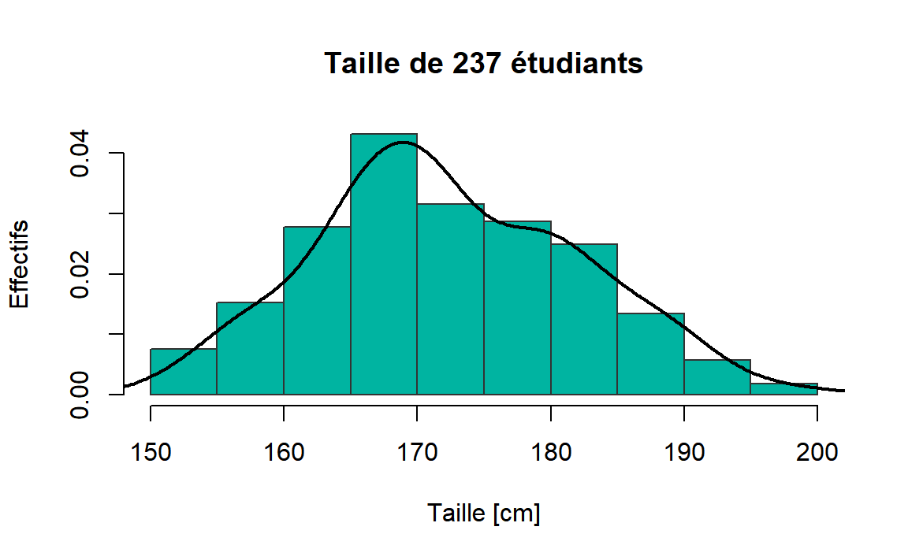
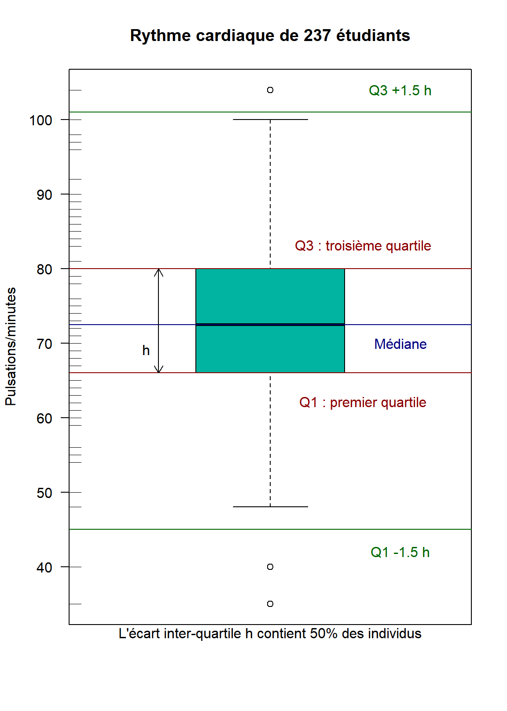

Chapitre 1 Statistique descriptive
La statistique descriptive a pour but de résumer l’information contenue dans les données de façon à en dégager les caratéristiques essentielles sous une forme simple et intelligible. Les deux principaux outils de la statistique descriptive sont les représentations graphiques et les indicateurs statistiques.
Il ne faut pas confondre la statistique qui est la science qui vient d’être définie et une statistique qui est un ensemble de données chiffrées sur un sujet précis.
1.1 Terminologie
Les premières statistiques correctement élaborées ont été celles des recensements démographiques. Ainsi le vocabulaire statistique est essentiellement celui de la démographie. Les ensembles étudiés sont appelés population. Les éléments de la population sont appelés individus ou unités statistiques. La population est étudiée selon une ou plusieurs variables (ou caractères). L’ensemble des individus constitue l’échantillon étudié.
Exemple: si l’échantillon est un groupe de TD à l’ESILV,
- Un individu est un étudiant.
- La population peut être l’ensemble des étudiants de l’ESILV, des élèves ingénieur de France, etc..
- Les variables étudiées peuvent être la taille, la filière choisie, la moyenne d’année, la couleur des yeux, etc..
Si l’échantillon est constitué de tous les individus de la population, on dit que l’on fait un recensement. Il est extrêmement rare que l’on se trouve dans cette situation. Quand l’échantillon n’est qu’une partie de la population, on parle de sondage. Le principe des sondages est d’étendre à l’ensemble de la population les enseignements tirés de l’étude de l’échantillon.
Pour que les résultats observés lors d’une étude soient généralisables à la population statistique, l’échantillon doit être représentatif de cette dernière, c’est à dire qu’il doit refléter fidèlement sa composition et sa complexité. Seul l’échantillonnage aléatoire assure la représentativité de l’échantillon. Il existe des méthodes pour y parvenir, dont nous ne parlerons pas ici.
Un échantillon est qualifié d’aléatoire lorsque chaque individu de la population a une probabilité connue et non nulle d’appartenir à l’échantillon.
Le cas particulier le plus connu est celui qui affecte à chaque individu la même probabilité d’appartenir à l’échantillon.
Chaque individu possède ainsi la même probabilité de faire partie d’un échantillon de \(n\) individus et chacun des échantillons possibles de taille \(n\) possède la même probabilité d’être constitué.
1.2 Statistique et Probabilités
Les concepts qui viennent d’être présentés sont les homologues de concepts du calcul des probabilités et il est possible de disposer en regard les concepts homologues (voir table ci-dessous).
| Probabilités | Statistique |
|---|---|
| Espace fondamental | Population |
| Epreuve | Tirage (d’un individu), expérimentation |
| Evènement élémentaire | Individu, observation |
| Variable aléatoire | Variable (Caractère) |
| Epreuves répétées | Echantillonnage |
| Nbre de répétitions d’une épreuve | Taille de l’échantillon, effectif total |
| Probabilité | Fréquence observée |
| Loi de probabilité | Distribution observée ou loi empirique |
| Espérance mathématique | Moyenne observée |
| Variance | Variance observée |
Le mot “variable” désigne à la fois la grandeur que l’on veut étudier (variable statistique) et l’objet mathématique qui la représente (variable aléatoire). Ainsi la notion de variable se confond avec celle de variable aléatoire.
Une variable statistique peut être discrète ou continue, qualitative ou quantitative. Les méthodes de représentation des données diffèrent suivant la nature des variables étudiées.
1.3 Description d’une série de valeurs
On considère ici une série (un ensemble) de valeurs, numériques, ou non, homogènes en ce sens qu’elles se réfèrent à une même variable et qu’elles ne sont pas structurées en sous-ensembles. Chaque valeur est associée à un individu statistique (unité statistique, observation). C’est le cas, par exemple, des notes obtenus par une promotion d’élèves à un examen. Dans cet exemple, lorsqu’il y a plusieurs examens, on peut vouloir considérer ensemble les notes d’un même élève. Les notes sont alors structurées en sous-ensembles et les méthodes à utiliser diffèrent de celles présentées ici.
Pour décrire une telle série, l’examen direct des valeurs n’est pas commode dès lors que ces valeurs sont un tant soit peu nombreuses. Pour cela, la statistique propose deux types d’outils : des graphiques et des indicateurs statistiques.
1.4 Représentations graphiques
Face à un problème particulier, on peut chercher à construire un graphique ad hoc. Mais, la plupart du temps, on utilise des graphiques standard dont la nature diffère selon le type de la variable étudiée.
1.4.1 Variable qualitative
Les valeurs que peut prendre une variable qualitative \(X\) (ex: couleur) constituent un ensemble de \(M\) modalités: {exemple: 1= bleu; 2=blanc; … ; M=rouge}; une telle série présente une apparence numérique mais on ne peut faire de calcul sur ces nombres (dans l’exemple, blanc n’est pas égale à deux fois bleu).
Autres exemples: catégorie socio-professionnelle, genre, région d’appartenance, etc.
Données
On a “mesuré” une variable qualitative sur \(n\) individus. Les données brutes sont constituées par la série des \(n\) valeurs \(\{x_i; i=1,\ldots,n\}\) avec \(x_i\) le numéro de la modalité pour l’individu \(i\), \(x_i \in 1,\ldots,M\). Il est commode d’agréger ces données en comptant le nombre d’individus \(n_m\) possédant la modalité \(m\). \(n_m\) est un effectif, ou une fréquence absolue (par opposition à la fréquence relative \(n_m/n\))
|
|
Diagramme en bâtons (barplot)
Il représente les données agrégées (groupées). Les modalités figurent en abscisse; la longueur d’un bâton le long de l’ordonnée est proportionnelle à l’effectif (ou à la fréquence). Il est utile de trier les modalités, généralement par fréquence décroissante.
Figure 1.1: Diagramme en bâtons
- L’ordre doit être respecté pour une variable ordinale.
- Quand il s’agit d’une variable nominale, il est préférable d’ordonner les modalités par effectifs croissants ou décroissant pour rendre le graphique plus lisible.
- Attention à ne pas confondre cette représentation avec un histogramme (cas de variable continue).
Diagrammes circulaires (pie chart)
Le fameux “camembert” n’est commode que s’il y a peu de modalités. Ici encore, il est commode de trier les modalités par effectifs décroissants.
Figure 1.2: Diagramme circulaire de la variable “couleur des yeux”
1.4.2 Variable quantitative
Cas de variable quantitative discrète
La distribution de \(X\) est fournie par le tableau des fréquences qui fait correspondre aux différentes valeurs (modalités) de la variable.
Soit l’exemple suivant de nombre de personnes par ménage pour les 10 ménages suivants:
| 2 | 3 | 3 | 3 | 4 | 5 | 5 | 5 | 5 | 6 |
On peut représenter la série avec un diagramme en bâtons (vertical ou horizontal).
Figure 1.3: Le nombre de personnes par ménage
Cas de variable quantitative continue
Pour la visualisation d’une série numérique, l’outil de base est l’histogramme, outil qui ressemble à un diagramme en bâtons mais qui doit en être distingué. Il repose sur une subdivision de la plage de variation de \(X\) en intervalles; pour chaque intervalle \([a,b[\) on compte le nombre d’individus tels que \(X \in [a,b[\), nombre dit effectif de l’intervalle.
Dans l’histogramme, les intervalles sont représentés sur l’axe des abscisses. Au-dessus de chaque intervalle, on dessine un rectangle dont la surface est proportionnelle à son effectif. La base étant la longueur de l’intervalle, la hauteur de chaque rectangle s’interprète comme une densité (effectif par unité de longueur).
|
|
Le nombre de classes doit être choisi de façon à ce que l’effectif moyen par intervalle soit suffisamment grand afin de pas être gêné par des irrégularités locales et, au contraire, afin de mettre en évidence une tendance générale.
Soit l’exemple suivant: on s’intéresse à la taille de 237 étudiants1.

L’idée de représenter en ordonnée la densité (et non l’effectif) permet de prendre en compte des intervalles de longueurs inégales, ce qui peut être nécessaire pour les intervalles extrêmes. Cela permet aussi de présenter la distribution de l’échantillon.
Dans la figure précédente, nous avons utilisé des effectifs (fréquences absolues), on préfère généralement utiliser des fréquences relatives pour pouvoir superposer facilement des distributions de référence.

Un autre graphique à base des quartiles est la boîte à dispersion ou boîte à moustaches (boxplot). Un rectangle, délimité par les premier et troisième quartiles, représente \(50\%\) de la population. Dans ce rectangle, une barre centrale représente la médiane. De part et d’autre du rectangle, on figure deux segments dont la longueur est environ 1.5 fois l’écart interquartile: “environ” car chaque segment est en fait délimité par une observation réelle incluse dans cet intervalle, celle qui est la plus éloignée de la médiane. Enfin, les observations au-delà de ces limites sont représentées individuellement.
Figure 1.4: Boîte à moustaches de Rythme cardiaque de 237 étudiants
1.5 Indicateurs statistiques
Les représentations graphiques présentées dans la section précédente ne permettent qu’une analyse visuelle de la répartition des données. Pour des variables quantitatives, il est intéressant de donner des indicateurs numériques permettant de caractériser au mieux ces données. On donne en général deux indicateurs : un indicateur de tendance centrale (ou de localisation) et un indicateur de dispersion:
- L’ordre de grandeur des observations situées au centre de la distribution: c’est la tendance centrale.
- La “largeur” de la série, c’est-à-dire la plus ou moins grande fluctuation des observations autour de la tendance centrale : c’est la dispersion.
1.5.1 Tendance centrale
Les mesures de tendance centrale permettent d’obtenir une idée juste de l’ordre de grandeur des valeurs ainsi que de la valeur centrale de la caractéristique que l’on désire étudier.
Les trois principaux indicateurs de tendance centrale sont:
- Le Mode.
- La Moyenne.
- La Médiane.
Le Mode empirique
Le mode d’une distribution statistique, noté \(M_o\), est la modalité de variable la plus représentée dans la distribution.
- Également appelé “valeur dominante” de la distribution.
- Il correspond au sommet de la distribution: le mode est la valeur la plus fréquente
La Moyenne empirique
La moyenne empirique de l’échantillon est la moyenne arithmétique des observations. Cet indicateur, noté \(\overline{x}\), est le plus utilisé. Le calcul de la moyenne dépends de la représentation des données:
- Si les données statistiques sont exploitées en série (données individuelles):
\[ \overline{x}=\frac{1}{n} \sum_{i=1}^{n} x_{i} \]
Exemple: Les notes d’un étudiant dans 7 matières sont:
| 18 | 16 | 15 | 14 | 12 | 17 | 11 |
La note moyenne est donc
\[ \overline{x}=\frac{18+16+15+14+12+17+11}{7}=14.71 \]
- Si les données statistiques sont groupées par modalités, \(n_i\) étant l’effectif correspondant à la modalité \(x_i\) :
\[ \overline{x}=\frac{1}{n} \sum_{i=1}^{p} n_{i} x_{i} \]
Exemple: Soit les notes obtenues par un élève au baccalauréat:
| \(x_i\) | \(n_i\) |
|---|---|
| 4 | 2 |
| 8 | 3 |
| 16 | 2 |
| 13 | 3 |
| 5 | 2 |
| Total | 12 |
La moyenne empirique pondérée de cet élève au baccalauréat est:
\[ \overline{x}=\frac{(4 \times 2)+(8 \times 3)+(16 \times 2)+(13 \times 3)+(5 \times 2)}{12}=\frac{113}{12}=9.42 \]
La Médiane empirique
On appelle “médiane” d’une distribution statistique, notée \(M_e\) , la valeur de la variable qui partage en deux groupes d’effectif identique les observations classées par ordre croissant. Il y a 50% des observations qui sont inférieures ou égales à la médiane et 50% des observations qui sont supérieures ou égales à la médiane.
L’avantage principal de la médiane, par rapport à la moyenne arithmétique, est qu’elle n’est pas indûment influencée par quelques données extrêmes.
Si l’on considère les \(x_i\) rangés par ordre croissant la médiane est définie par:
\[\begin{align} M_e = x_{(n+1)/2} \quad &\text{si}\quad n \quad\text{impair}\\ M_e = \frac{x_{n/2}+x_{(n/2)+1}}{2} \quad &\text{si}\quad n \quad\text{pair} \end{align}\]
1.5.2 Dispersion (variabilité)
Après celle relative à la tendance centrale, la deuxième question que l’on se pose à propos d’une série numérique est celle de sa dispersion (souvent sous-entendu “autour de la tendance centrale”). Exemples:
- Un patient apprend de son médecin que sa pression intra-oculaire est de 19. La pression moyenne pour ceux de son âge et de son sexe est de 17. Que peut-il conclure? Ce n’est pas nécessairement inquiétant: les données d’une population sont presque toutes distinctes de la moyenne. Mais s’écarte-t-il trop de la moyenne? De combien les autres membres de la population s’écartent de la moyenne?
- La température moyenne à Montréal est de 6.9°C. Ceci n’empêche pas la température de baisser à -35°C en hiver et de monter à +35°C en été.
On va définir:
- L’étendue.
- La variance et l’écart-type.
Etendue (amplitude) empirique
C’est la différence entre les valeurs maximum et minimum, soit, les valeurs ayant été classées par ordre croissant : \(x_n-x_1\). Historiquement, c’est le critère le plus ancien (employé par les Grecs pour leurs mesure astronomiques). Il est utilisé lorsque l’on ne s’intéresse pas en détail à la dispersion : par exemple, on dira que le temps de trajet en TGV entre Rennes et Paris est compris entre 2h05 (train direct) et 2h25 (quelques arrêts).
Variance et Ecart-type empiriques
La variance et sa racine l’écart-type sont les indicateurs de dispersion utilisés de manière standard. La variance (noté usuellement \(s^2\) pour une série de valeurs observées, \(\sigma^2\) pour une distribution théorique et \(V(X)\) pour une variable aléatoire), est la moyenne des carrés des écarts à la moyenne. Soit, pour une série numérique:
\[ s^{2}=\frac{1}{n} \sum_{i=1}^{n}\left(x_{i}-\overline{x}\right)^{2} \] Par rapport à la variance, l’intérêt de l’écart-type est qu’il s’exprime dans les mêmes unités que les valeurs étudiées.
Cependant, la variabilité doit toujours se comparer à la valeur moyenne. Des données présentent une forte variabilité si l’écart-type est grand par rapport à la moyenne.
Aussi on définit le coefficient de variation empirique de l’échantillon par
\[ cv_{n}=\frac{s_{n}}{\overline{x}_{n}} \]
L’intérêt de cet indicateur est qu’il est sans dimension. Une pratique empirique courante est de considérer que l’échantillon possède une variabilité significative si \(cv_{n} > 0.15\). Si \(cv_{n} \leq 0.15\), les données présentent peu de variabilité et on considère que la moyenne empirique à elle seule est un bon résumé de tout l’échantillon.
En , la commande var(x) donne \(s*^2 = \frac{n}{n-1}s^2\) au lieu de \(s^2\). C’est aussi ce que l’on a sur les calculatrices dotées de fonctionnalités statistiques. On en verra l’explication au chapitre Estimation.
De même \(s*=\sqrt{s*^2}\) est donné en par sd(x) (standard deviation).
- \(s_{n}^{2}=\frac{1}{n} \sum_{i=1}^{n}\left(x_{i}-\overline{x}_{n}\right)^{2}=\frac{1}{n} \sum_{i=1}^{n} x_{i}^{2}-\overline{x}_{n}^{2}\) évoque \(\operatorname{Var}(X)=E\left[(X-E(X))^{2}\right]=E\left(X^{2}\right)-[E(X)]^{2}\).
- En finance, la variabilité d’une série de données est appelée volatilité. L’étude de la volatilité est fondamentale dans les analyses de risque financier.
1.6 Statistique descriptive bidimensionnelle
Dans cette section, on s’intéresse a l’étude simultanée de deux variables \(X\) et \(Y\), étudiées sur le même échantillon, toujours noté \(\Omega\). L’objectif essentiel des méthodes présentées est de mettre en évidence une éventuelle variation simultanée des deux variables, que nous appellerons alors liaison. Dans certains cas, cette liaison peut être considérée a priori comme causale, une variable \(X\) expliquant l’autre \(Y\); dans d’autres, ce n’est pas le cas, et les deux variables jouent des rôles symétriques. Dans la pratique, il conviendra de bien différencier les deux situations et une liaison n’entraîne pas nécessairement une causalité.
Les données sont présentées de la façon suivante: on dispose de deux séries \(X\) et \(Y\) représentant l’observation des variables \(X\) et \(Y\) sur les mêmes \(n\) individus: on a une série bidimensionnelle \((X,Y)\) de taille \(n\):
| individu | \(X\) | \(Y\) |
|---|---|---|
| \(1\) | \(x_1\) | \(y_1\) |
| \(2\) | \(x_2\) | \(y_2\) |
| \(\ldots\) | \(\ldots\) | \(\ldots\) |
| \(i\) | \(x_i\) | \(y_i\) |
| \(\ldots\) | \(\ldots\) | \(\ldots\) |
| \(n\) | \(x_n\) | \(y_n\) |
où \(x_i\) est la valeur de \(X\) et \(y_i\) celle de \(Y\) pour l’individu n° \(i\) de la série.
Deux variables quantitatives
Pour étudier la liaison entre deux variables quantitatives (discrètes), on commence par faire un graphique du type nuage de points (scatterplot). La forme générale de ce graphique indique s’ll existe ou non une liaison entre les deux variables. Il s’agit d’un graphique très commode pour représenter les observations simultanées de deux variables quantitatives.
Figure 1.5: Exemple de nuage de points représentant la consommation de carburant en fonction du poids de voitures. L’exemple extrait du dataset mtcars dans R
Le choix des échelles a retenir pour réaliser un nuage de points peut s’avérer délicat. D’une façon générale, on distinguera le cas de variables homogènes (représentant la même grandeur et exprimées dans la même unité) de celui des variables hétérogenes. Dans le premier cas, on choisira la même échelle sur les deux axes (qui seront donc orthonormés); dans le second cas, il est recommandé soit de représenter les variables centrées et réduites sur des axes orthonormés, soit de choisir des échelles telles que ce soit sensiblement ces variables là que l’on représente (c’est en genéral cette seconde solution qu’utilisent, de façon automatique, les logiciels statistiques).
Rappel: variables centrées et réduites
Si \(X\) est une variable quantitative de moyenne \(\overline{x}\) et d’écart-type \(\sigma_{X},\) on appelle variable centrée associée à \(X\) la variable \(X-\overline{x}\) (elle est de moyenne nulle et d’écart-type \(\sigma_{X}\)), et variable centrée et réduite (ou tout simplement variable réduite) associe à \(X\) la variable \(\frac{X-\overline{x}}{\sigma}\) (elle est de moyene nulle et d’écart-type égal à un). Une variable centrée et réduite s’exprime sans unité.
Coefficient de corrélation linéaire
On appelle coefficient de corrélation linéaire de \(X\) et de \(Y\) la valeur définie par
\[\rho = \rho(X,Y) = \frac{Cov(X,Y)}{\sqrt{V(X)V(Y)}} = \frac{Cov(X,Y)}{\sigma_X \sigma_Y}\]
Où \(Cov(X,Y)\) est la covariance de \(X\) et de \(Y\) la valeur si elle existe:
\[Cov(X,Y) = \frac{1}{N} \sum_{i=1}^N \left( X_i - \bar{X} \right) \left( Y_i - \bar{Y} \right)\]
On peut montrer que \(-1 \leq \rho(X,Y) \leq 1\).
Interprétation de \(\rho\)
Le coefficient de corrélation est une mesure du degré de linéarité entre \(X\) et \(Y\).
Les valeurs de \(\rho\) proches de \(1\) ou \(-1\) indiquent une linéarité quasiment rigoureuse entre \(X\) et \(Y\).
Les valeurs de \(\rho\) proche de 0 indiquent une absence de toute relation linéaire.
Lorsque \(\rho(X,Y)\) est positif, \(Y\) a tendance à augmenter si \(X\) en fait autant.
Lorsque \(\rho(X,Y) < 0\), \(Y\) a tendance à diminuer si \(X\) augmente.
Si \(\rho(X,Y) =0\), on dit que ces deux statistiques sont non corrélées.
Figure 1.6: Illustration de l’effet de la variation of the effect of varying the strength and direction of a correlation
La corrélation mesure l’association, pas la causalité. Dans certains cas, une liaison peut être considérée a priori comme causale, une variable expliquant l’autre. Dans d’autres, ce n’est pas le cas et les deux variables jouent alors des rôles symétriques.
Sur ce lien on trouve des exemples de variables associées linéairement mais non liées de manière causale.
D’autre part, une corrélation nulle ne signifie pas que deux variables sont indépendantes. Voici quelques exemples:
Figure 1.7: Exemples où la corrélation est presque nulle mais les variables ne sont pas indépendantes.
Une variable quantitative et une qualitative
On dispose d’une variable qualitative \(X\) à \(p\) modalités \(m_{1}, \ldots, m_{p}\) et une variable quantitative \(Y\). On a alors \(p\) sous-populations déterminées par les \(p\) modalités de \(X\).
L’étude de la liaison entre \(X\) et \(Y\) consiste en l’étude des différences entre ces sous-populations: il y aura absence de lien si on ne distingue pas de différence notoire dans les caractéristiques de ces différentes sous-populations.
Une façon commode de représenter les données dans le cas de l’étude simultanée d’une variable quantitative et d’une variable qualitative consiste à réaliser des boîtes à moustaches parallèles. Les boîtes à moustaches permettent de comparer facilement des groupes d’individus, par exemple ici les garçons et les filles parmi 237 étudiants2:
Figure 1.8: Boîtes à moustaches par sexe
Deux variables qualitatives
On considère dans ce paragraphe deux variables qualitatives observées simultanément sur \(n\) individus. On suppose que la première, notée \(X,\) possède \(r\) modalités notées \(x_{1}, \ldots, x_{\ell}, \ldots, x_{r},\) et que la seconde, notée \(Y,\) possède \(c\) modalités notées \(y_{1}, \ldots, y_{h}, \ldots, y_{c}\).
Ces données sont présentées dans un tableau à double entrée, appelé tables de contingence, dans lequel on dispose les modalités de \(X\) en lignes et celles de \(Y\) en colonnes. Ce tableau est donc de dimension \(r \times c\) et a pour élément générique le nombre \(n_{\ell h}\) d’observations conjointes des modalités \(x_{\ell}\) de \(X\) et \(y_{h}\) de \(Y ;\) les quantités \(n_{\ell h}\) sont appelées les effectifs conjoints.
Une table de contingence se présente donc sous la forme suivante:
| \(y_1\) | \(\ldots\) | \(y_h\) | \(\ldots\) | \(y_c\) | sommes | |
| \(x_1\) | \(n_{11}\) | \(n_{1h}\) | \(n_{1c}\) | \(n_{1.}\) | ||
| \(\vdots\) | ||||||
| \(x_{\ell}\) | \(n_{\ell 1}\) | \(n_{\ell h}\) | \(n_{\ell c}\) | \(n_{\ell .}\) | ||
| \(\vdots\) | ||||||
| \(x_r\) | \(n_{r 1}\) | \(n_{r h}\) | \(n_{rc}\) | \(n_{r.}\) | ||
| sommes | \(n_{.1}\) | \(n_{.h}\) | \(n_{.c}\) | \(n\) |
Les quantités \(n_{\ell .}(\ell=1, \ldots, r)\) et \(n_{.h}(h=1, \ldots, c)\) sont appelées les effectifs marginaux; ils sont définis par \(n_{\ell .}=\sum_{h=1}^{c} n_{\ell h}\) et \(n_{. h}=\sum_{\ell=1}^{r} n_{\ell h}\) et ils vérifient \(\sum_{\ell=1}^{r} n_{\ell.}=\sum_{h=1}^{c} n_{.h}=n\).
De façon analogue, on peut définir les notions de fréquences conjointes et de fréquences marginales.
On peut représenter graphiquement deux variables qualitatives avec des diagrammes en barre parallèles (mosaïcplots).
Indices de liaison
Lorsque tous les profil-lignes sont égaux, ce qui est équivalent à ce que tous les profil-colonnes soient égaux et que
\[ \forall(\ell, h) \in\{1, \ldots, r\} \times\{1, \ldots, c\} : n_{\ell h}=\frac{n_{\ell .} n_{.h}}{n} \]
on dit qu’il n’existe aucune forme de liaison entre les deux variables considérées \(X\) et \(Y .\) Par suite, la mesure de la laison va se faire en évaluant l’écart entre la situation observée et l’état de non liaison défini ci-dessus.
Khi-deux
Il est courant en statistique de comparer une table de contingence observée, d’effectif conjoint générique \(n_{\ell h},\) à une table de contingence donnée a priori (et appelée standard), d’effectif conjoint générique \(s_{\ell h},\) en calculant la quantié
\[ \sum_{\ell=1}^{r} \sum_{h=1}^{c} \frac{\left(n_{\ell h}-s_{\ell h}\right)^{2}}{s_{\ell h}} \] De façon naturelle, pour mesurer la liaison sur une table de contingence, on utilise donc l’indice appelé khi-deux (chi-square) et défini comme suit: \[ \chi^{2}=\sum_{\ell=1}^{r} \sum_{h=1}^{c} \frac{\left(n_{\ell h}-\frac{n_{\ell+} n_{+h}}{n}\right)^{2}}{\frac{n_{\ell+} n_{+h}}{n}}=n\left[\sum_{\ell=1}^{r} \sum_{h=1}^{c} \frac{n_{\ell h}^{2}}{n_{\ell+} n_{+h}}-1\right] \]
Le coefficient \(\chi^{2}\) est toujours positif ou nul et il est d’autant plus grand que la liaison entre les deux variables considérés est forte.
Un document complet et intéressant sur la visualization des données est sur ce lien
Disponibles dans le jeu de données
surveyde la librairieMASSde ↩︎On pourra dire en regardant ces deux figures qu’il n’y a pas de différence de rythme cardiaque entre les garçons et les filles, mais il y probablement une différence de taille. Pour confirmer cette comparaison on effectuera un test d’hypothèse de comparaison de moyennes entre deux échantillons.↩︎